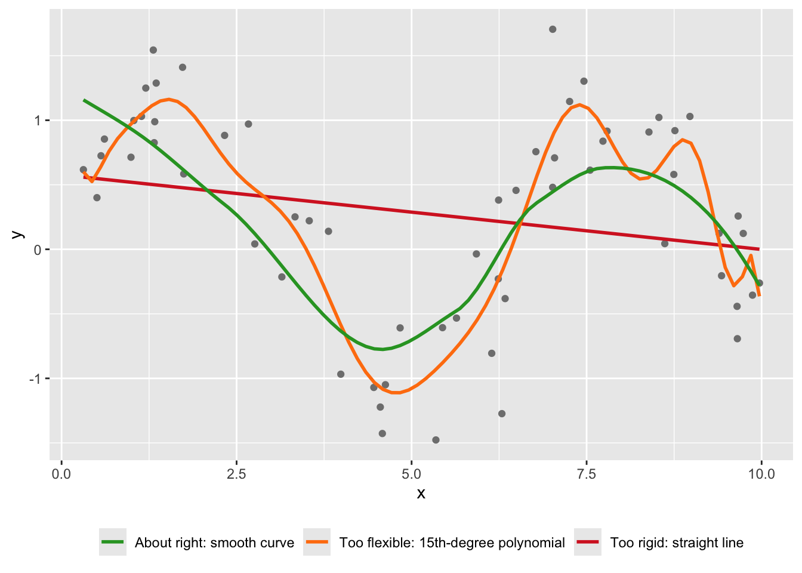

Today’s reading, Yarkoni & Westfall (2017), makes the case we develop here: psychology has much to gain from taking prediction seriously.
The Explanatory Culture of the Social Sciences
Overwhelmingly, psychological research is explanatory in nature.
The working assumption goes like this: there is a data-generating model out there in the world that produced these data, and our job is to figure out what it is.
We estimate the true parameters that led from the input to the output, test whether they differ from zero, and build theories about why X is related to Y.
X ⟶ [ regression, logistic regression ] ⟶ Y
Moderation and Mediation as Explanatory Tools
Moderation and mediation are two examples of explanatory tools that decompose the overall effect of X on Y into interpretable parameters:
Moderation asks when or for whom. A moderator W changes the strength (or even the direction) of the X to Y effect.
Mediation asks how or why. The effect of X on Y flows through a mediator M.
Both are explanation machines. Each decomposes an overall effect into interpretable parameters (paths, interactions) that are then tested for significance. The parameters are the scientific story.
A preview of the contrast to come. A flexible predictive model can capture these same patterns, interactions and indirect pathways alike, without ever naming them.
Structural Equation Models as Explanatory Tools
Further still, structural equation models (SEMs) are a generalization of regression that can handle multiple outcomes, latent variables, and complex causal structures. SEMs are often used to test theoretical models that specify how variables relate to each other.
Typically, every quantity in an SEM is interpretable and testable.
An SEM is often a formal statement of how the world works, drawn as a picture and estimated all at once.
Every arrow encodes a theoretical commitment, and this is an example of the explanatory culture taken to a limit.
Difficulties with Explanatory Approaches
These are powerful tools, but the way psychology has used them has run into trouble:
Too many defensible choices. Which outliers to drop, which covariates to include, when to stop collecting data. Each choice is defensible on its own; together they let one dataset produce many different results (Simmons, Nelson, & Simonsohn, 2011).
Findings that do not replicate. The Open Science Collaboration (2015) repeated 100 studies from leading psychology journals. Ninety-seven percent of the originals reported significant effects. About 36% of the replications did, with effect sizes roughly half the original size.
Theories that forbid nothing. A verbal theory flexible enough to accommodate any result has not really been tested (Meehl, 1978). “Consistent with the theory” is weak evidence when the opposite finding would have been just as consistent.
Nothing ever checks prediction. Fit the model to your sample, interpret the coefficients, report the fit. At no point does the standard workflow ask how the model does on people it has never seen. The SEM above can have excellent fit indices and never predict a single new person’s score.
Simmons, J. P., Nelson, L. D., & Simonsohn, U. (2011). False-positive psychology. Psychological Science, 22(11), 1359-1366.https://doi.org/10.1177/0956797611417632
Open Science Collaboration (2015). Estimating the reproducibility of psychological science. Science, 349(6251), aac4716.https://doi.org/10.1126/science.aac4716
More recently, a prediction focus (i.e. machine learning) has emerged in the social sciences.
From this perspective, there is some process that led to the data, but we may never know its true form.
Rather than trying to uncover the true mechanism, we aim to find a model that maps the inputs to the outputs as accurately as possible, using whatever algorithm does the job.
X ⟶ [ nature: unknown ] ⟶ Y X ⟶ [ trees, random forests, neural networks, … ] ⟶ Y
This framing of “two cultures” of statistical modeling comes from Leo Breiman (2001), and it is one of the most useful lenses for everything we do this semester.
Side by side, the two cultures look like this:
Explanatory culture
Predictive culture
Goal
Recover the true data-generating process
Predict new observations accurately
Typical question
Is this coefficient significant? Why does X relate to Y?
How well does the model predict people it has never seen?
Success looks like
Interpretable parameters, supported theory
Small out-of-sample error
Main risk
A story that fits this sample but generalizes poorly
Accurate predictions nobody can explain
Typical tools
Regression, ANOVA, SEM
Trees, ensembles, neural networks, and regression too
TipThe Two Cultures
In groups of 2-4 (about 5 minutes): What are the pros and cons of these two approaches? Does knowing how a process works mean you can make better predictions? Does making good predictions mean you have a good sense of how a process works? Have one concrete example ready to share.
Breiman, L. (2001). Statistical modeling: The two cultures. Statistical Science, 16(3), 199-231.
Yarkoni, T., & Westfall, J. (2017). Choosing prediction over explanation in psychology: Lessons from machine learning. Perspectives on Psychological Science, 12(6), 1100-1122.
What Today’s Reading Argues
Yarkoni & Westfall do not just describe the two cultures; they take a side, and their argument has three parts worth separating.
Criticism of Status Quo
Psychology has spent decades optimizing for explanation, yet the theories this produced often predict poorly, and sometimes barely better than chance.
Their uncomfortable suggestion is that an explanation that cannot predict may not be much of an explanation at all.
The Replication Crisis as Overfitting
Think about how many psychologists analyze data, they often tune an analysis until it fits the idiosyncrasies of one particular sample.
In machine learning vocabulary, this is called is overfitting, and this can limit generalizability.
A Path Forward
Their proposed remedies are the core machinery of machine learning:
hold out test data
use cross-validation
the bias-variance trade-off
regularization to keep models honest
This list is essentially the next month of our class.
One important nuance, the paper does not argue psychology should abandon explanation. The argument is that prediction disciplines explanation. If your theory is right, it should show up as predictive accuracy on people you have never seen; if it does not, that is evidence worth taking seriously.
What Is Machine Learning?
In general, machine learning is a set of tools for building models that predict outcomes from inputs.
In practice this means using examples (training data) to build a model that makes accurate predictions about new cases it has never seen (test data).
Task, Experience, and Performance
Another definition that has aged well comes from Mitchell (1997).
A system is said to learn from experience E, with respect to some class of tasks T and performance measure P, if its performance at tasks in T, as measured by P, improves with experience E.
Watch that definition at work on the most talked-about AI systems of the moment, large language models:
Task T: predict the next word (technically a token), given everything written so far
Experience E: an enormous corpus of text
Performance P: how much probability the model gave to the token that actually came next (the less surprised it was, the better)
NoteFurther Information
Next-token prediction is the engine, but the LLMs undergo additional training. For example, the model is also tuned on curated example responses, and against human preferences. People compare pairs of candidate responses, a second model learns to predict which one a person would prefer, and that predicted approval becomes another Performance measure.
Now a second example, closer to home for a psychology course. Consider the recommendation feed on TikTok, YouTube, or Spotify:
Task T: choose what you see or hear next
Experience E: your watch, skip, replay, and scroll history (and everyone else’s)
Performance P: how long you keep watching
Notice whose behavior is being learned here: yours. A recommender system is a machine running a continuous learning loop on human behavior, which makes it one of the most psychologically interesting objects in modern technology. (Recall the Screenome participants from Tuesday: the feed is on the other side of many of those sessions.)
Three lessons from these examples will return all semester:
Clearly specify the aims. Every learning problem needs a defined task, performance metric, and source of experience.
The training experience matters. A model knows only the world its data shows it. Commercial facial analysis systems have performed worst for the people least represented in their training data (Buolamwini & Gebru, 2018), and models are routinely confidently wrong in situations unlike their experience.
Focus on generalizability. The goal is never performance on the data you learned from; it is performance on the data that comes next.
TipActivity
With a partner (about 3 minutes): pick an app one of you used today. Specify its Task, Experience, and Performance measure. What could go wrong with its training experience, and who would be affected?
Mitchell, T. M. (1997). Machine Learning. McGraw-Hill.
Buolamwini, J., & Gebru, T. (2018). Gender shades: Intersectional accuracy disparities in commercial gender classification. Proceedings of Machine Learning Research, 81, 77-91.
Machine Learning and Its Neighbors
Machine learning travels with a crowd of similar-sounding terms. Here is the map, from the outside in:
Artificial intelligence (AI): machines doing things that look intelligent, by any means, including rules written by hand (expert systems, early chess engines)
Machine learning (ML): the subset where the behavior is learned from data rather than programmed (most of this course)
Deep learning: machine learning with many-layered neural networks
Generative AI: deep learning models that produce text, images, and audio
Machine Learning and Statistics
The honest answer is that machine learning and statistics have a tremendous amount of overlap. In reality, many of the perceived differences are superficial, and tied to different vocabulary.
Statistics says
Machine learning says
Predictor, independent variable
Feature, input
Outcome, dependent variable
Target, label
Coefficients, parameters
Weights
Estimation, model fitting
Learning, training
Observation, case, participant
Example, instance
Fitted values
Predictions
Regression and classification models
Supervised learning
Machine Learning and Psychometrics
Closer to home even, factor analysis, invented by Spearman in 1904 to study intelligence, is dimension reduction: learning hidden structure from data without labeled outcomes, which is unsupervised learning by an older name. We will discuss this at length later in the course.
Prediction Is Already in Psychology
Despite the popularity of explanatory modeling in the social, behavioral and health sciences, prediciton is already being applied in many critical areas:
Suicide risk. Machine learning models applied to electronic health records predict risk of suicide attempts better than traditional approaches, in a domain where unaided clinical prediction has struggled (Walsh, Ribeiro, & Franklin, 2017).
Digital phenotyping. Smartphone signals (movement, sleep, typing, sociability) are being used to detect changes in mood and mental health as they unfold in daily life (Onnela & Rauch, 2016).
Treatment selection. Models trained on clinical trial data can predict which patients are likely to respond to which depression treatment, a step toward genuinely personalized care (Chekroud et al., 2016).
In each case the question is not what is the true coefficient? but how accurately can we predict, for a person we have not seen yet?
References
Walsh, C. G., Ribeiro, J. D., & Franklin, J. C. (2017). Predicting risk of suicide attempts over time through machine learning. Clinical Psychological Science, 5(3), 457-469.
Onnela, J. P., & Rauch, S. L. (2016). Harnessing smartphone-based digital phenotyping to enhance behavioral and mental health. Neuropsychopharmacology, 41(7), 1691-1696.
Chekroud, A. M., Zotti, R. J., Shehzad, Z., Gueorguieva, R., Johnson, M. K., Trivedi, M. H., Cannon, T. D., Krystal, J. H., & Corlett, P. R. (2016). Cross-trial prediction of treatment outcome in depression: A machine learning approach. The Lancet Psychiatry, 3(3), 243-250.
Regression is Machine Learning?
Now apply Mitchell’s framework to something familiar: ordinary data analysis. Suppose we want to estimate a respondent’s depression score (the CES-D) from respondent characteristics.
Task T: estimate the respondent’s CES-D score from their characteristics
Experience E: a dataset with scores and characteristics from many respondents
Performance P: the difference between the observed and estimated scores
The outcome is the CES-D score, and the predictors are things like clinical history, current treatment, age, and sex. A natural model is regression:
In our statistics training, we’ve typically been interested in:
the significance of regression coefficients
theories about why X is related to Y
Regression as Machine Learning
If we instead treat regression as a machine learning algorithm, the emphasis shifts.
Instead, we learn patterns in one dataset and
We then evaluate the model in another
In this way we care primarily about generalizability: keeping the model from becoming too complex, and preventing it from learning idiosyncrasies of our sample that will not hold up in new data.
Extending Regression
From an ML perspective, our regression model is just one choice of the function connecting predictors to outcome:
\[
\widehat{CESD} = f(X) + e_i
\]
Machine learning models are, at heart, different choices of \(f(X)\). The function may be:
linearly related to the outcome
nonlinearly related to the outcome
estimated via nonparametric methods
sparse, where only some predictors matter
black-box-ish and difficult to interpret
And here is one more way to see the continuum. Our CES-D regression has 21 learned parameters: an intercept and 20 slopes. A frontier language model has on the order of a trillion.
If you have ever fit a regression, you were already doing machine learning. In this course we will extend your collection of \(f(X)\)’s, and learn the machinery for choosing among them honestly.
Underfitting and Overfitting
In machine learning there are really two big ways things can go wrong from a technical perspective: underfitting and overfitting.
You already know both these failure types from your own experiences:
Underfitting (model is too rigid). A stereotype is a one-rule model applied to everyone. It ignores the details of the person in front of you, so it misses real patterns. Fast, stable, and systematically wrong.
Overfitting (model is too flexible). A superstition built from one bad experience is a model trained on a single data point. It treats an accident as a law. Responsive, sensitive, and fooled by noise.
Here is the same idea in data. The points below come from a simple curved pattern plus noise. Three models try to learn it (don’t worry about the code yet; focus on the picture):
library(ggplot2)set.seed(559) # makes the random draw repeatablex <-runif(60, 0, 10)y <-sin(x) +rnorm(60, sd =0.4)d <-data.frame(x, y)ggplot(d, aes(x, y)) +geom_point(color ="grey50") +geom_smooth(method ="lm", se =FALSE,aes(color ="Too rigid: straight line"), linewidth =1) +geom_smooth(method ="lm", formula = y ~poly(x, 15), se =FALSE,aes(color ="Too flexible: 15th-degree polynomial"), linewidth =1) +geom_smooth(method ="loess", se =FALSE,aes(color ="About right: smooth curve"), linewidth =1) +scale_color_manual(name =NULL,values =c("Too rigid: straight line"="#d62728","Too flexible: 15th-degree polynomial"="#ff7f0e","About right: smooth curve"="#2ca02c")) +theme(legend.position ="bottom")

The straight line is underfitting: too rigid to see the real pattern.
The wiggly polynomial is overfitting: it chases every individual point, including the noise.
The middle curve captures the pattern and lets the noise go.
On these 60 points, the wiggly model fits best. On the next 60 points, it loses badly, and that is the only comparison that counts.
TipActivity
With a partner (about 3 minutes): When fitting a model how do we know if it is underfitting or overfitting? Can we tell from our own data?
Two Flavors of Machine Learning
Machine learning methods come in two primary flavors, and they organize the entire course:
Supervised learning, where an outcome supervises the learning: regression problems (numeric outcomes) and classification problems (categorical outcomes)
Unsupervised learning, where there is no outcome to supervise: clustering and dimension reduction
But what exactly are these, and how do they differ?